I 12 Segni Zodiacali: Guida Completa
Caratteristiche, elementi, pianeti dominanti e compatibilità di tutti i 12 segni dello zodiaco. Dalla storia dell'astrologia alla guida pratica per ogni segno.
Cos'è l'Astrologia e Come Funziona
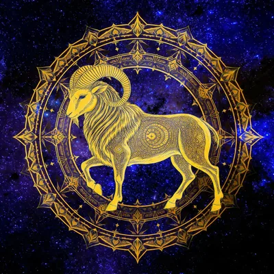
Mesha · Ariete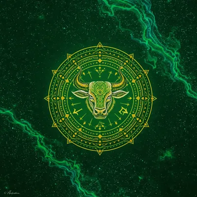
Vrishabha · Toro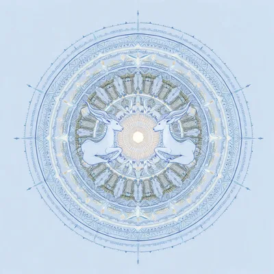
Mithuna · Gemelli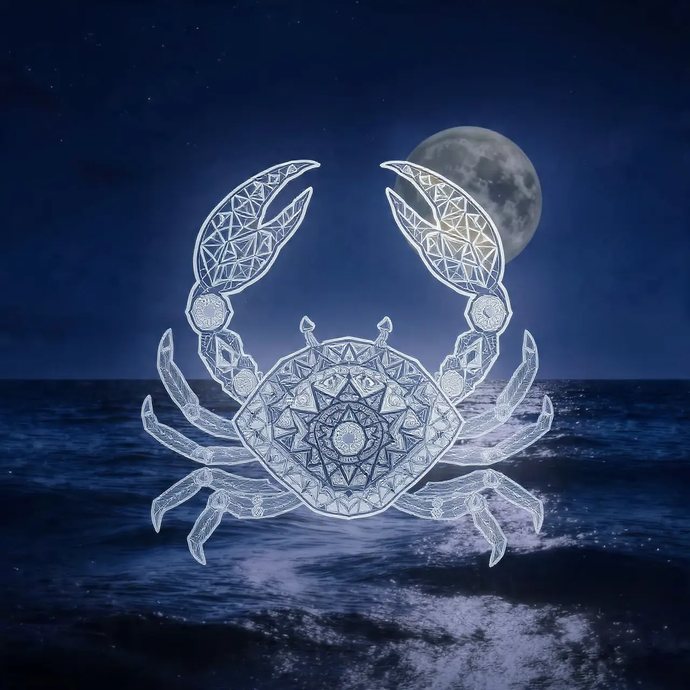
Karka · Cancro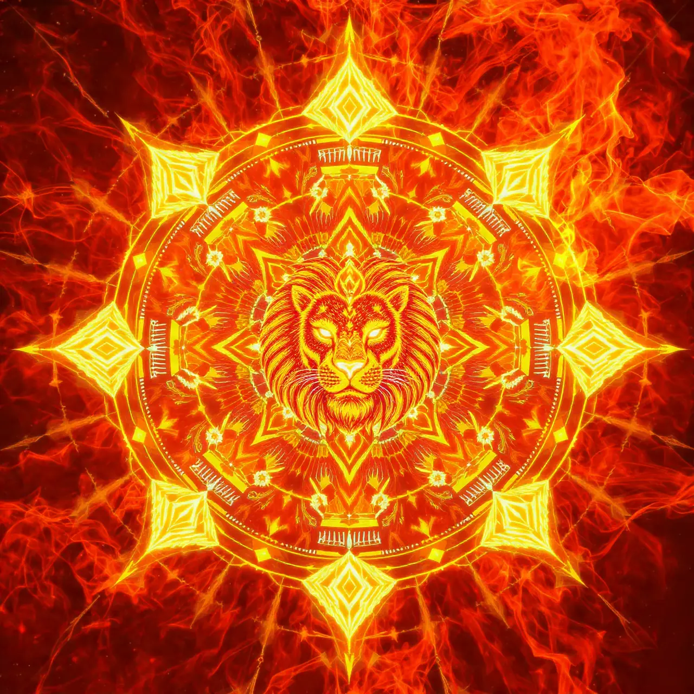
Simha · Leone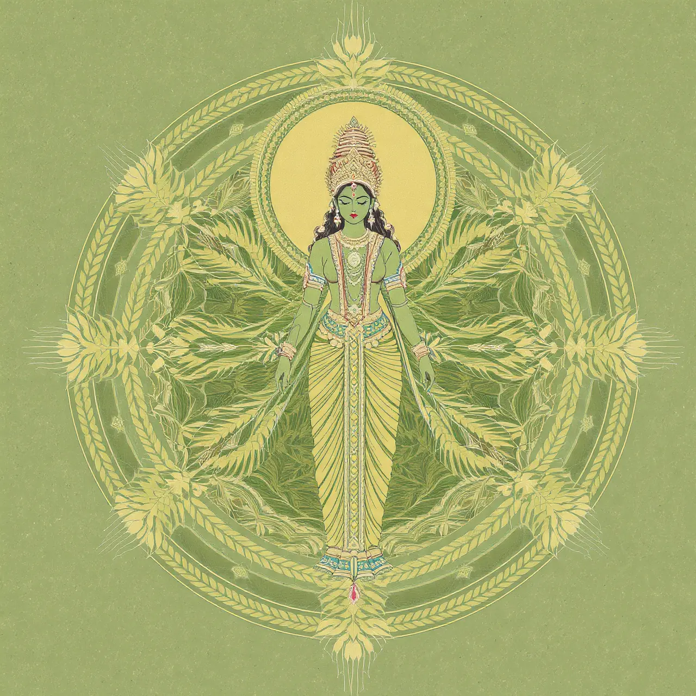
Kanya · Vergine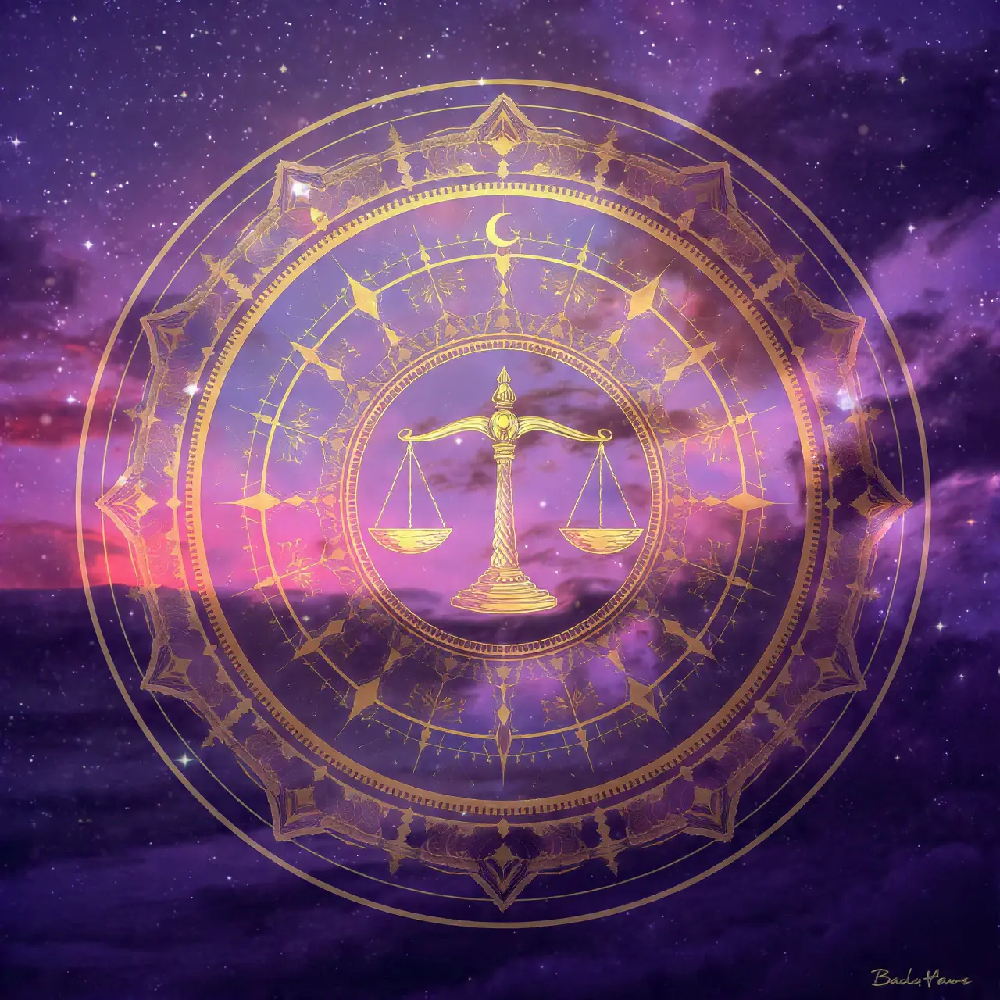
Tula · Bilancia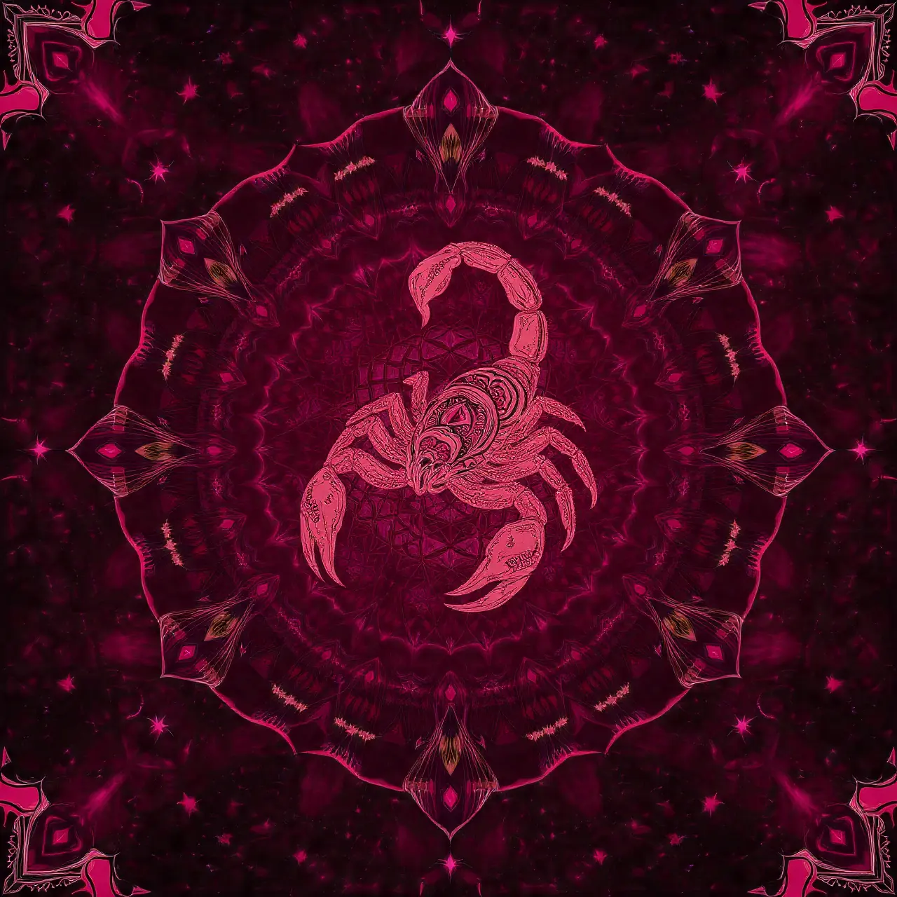
Vrischika · Scorpione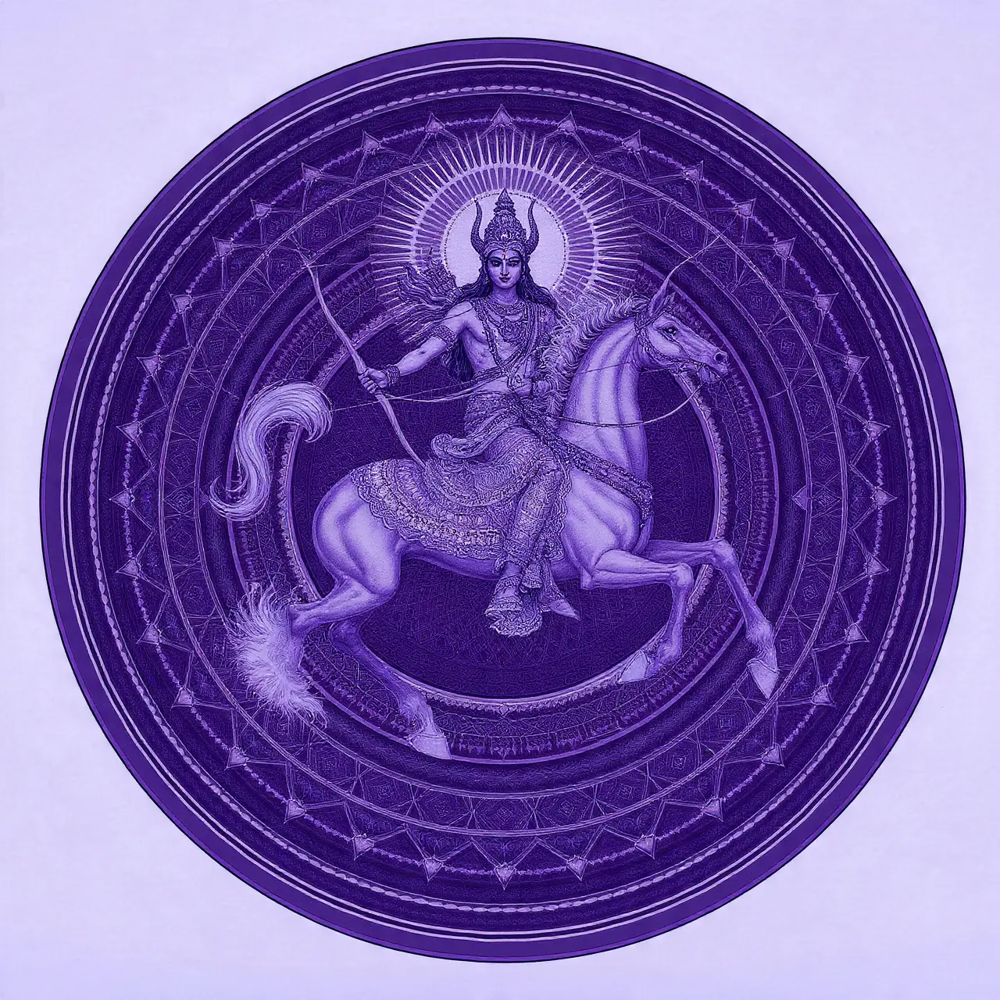
Dhanu · Sagittario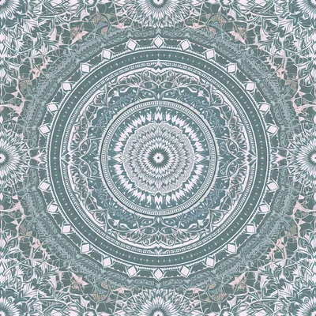
Makara · Capricorno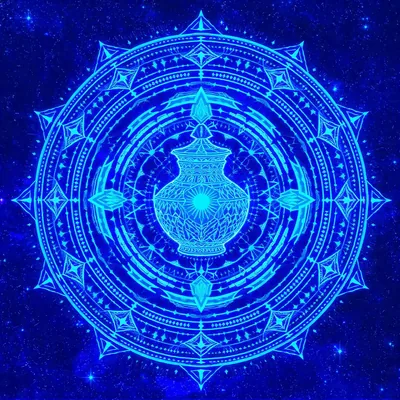
Kumbha · Acquario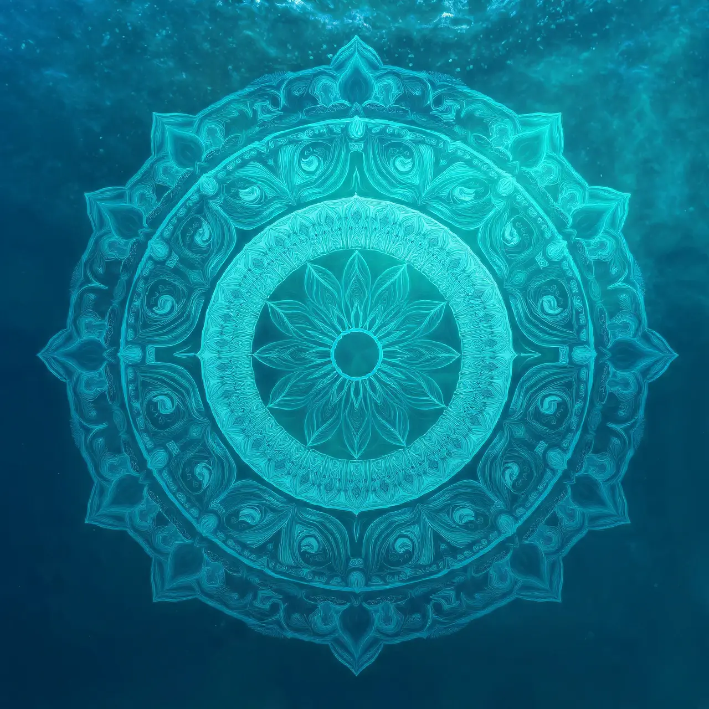
Meena · PesciL'astrologia è un sistema di credenze che interpreta le influenze dei corpi celesti — Sole, Luna, pianeti — sulle personalità umane e sugli eventi terrestri. Ha origini antichissime: i Babilonesi svilupparono i primi sistemi astrologici già nel II millennio a.C., e l'astrologia occidentale affonda le radici nella Grecia ellenistica del IV-II secolo a.C.
Il fondamento è lo zodiaco: una fascia celeste divisa in 12 sezioni di 30° ciascuna. Il segno solare — quello che comunemente chiamiamo "il nostro segno" — è determinato dalla posizione del Sole al momento della nascita. Ma il tema natale completo include anche il segno lunare (emozioni), l'ascendente (come ci presentiamo al mondo) e le posizioni di tutti i pianeti.
Ogni segno è caratterizzato da un elemento (Fuoco, Terra, Aria, Acqua), una modalità (Cardinale, Fisso, Mutevole) e un pianeta dominante. Come esploriamo anche nella nostra guida ai tarocchi, ogni sistema divinatorio ha la propria struttura archetipica — nell'astrologia questi tre fattori definiscono l'archetipo di ogni segno.
I Quattro Elementi Zodiacali
🔥 Fuoco (Ariete, Leone, Sagittario): Energia, entusiasmo, passione e impulso all'azione. I segni di fuoco sono dinamici, ottimisti e visionari. Cercano l'avventura e la crescita, ma possono essere impulsivi.
🌱 Terra (Toro, Vergine, Capricorno): Concretezza, praticità e stabilità. I segni di terra sono affidabili e orientati ai risultati tangibili. Apprezzano la sicurezza materiale, ma possono essere rigidi.
💨 Aria (Gemelli, Bilancia, Acquario): Intelletto, comunicazione e pensiero astratto. I segni d'aria sono curiosi e aperti alle idee nuove. Eccellono nelle relazioni, ma possono essere distaccati emotivamente.
💧 Acqua (Cancro, Scorpione, Pesci): Emozioni, intuizione e profondità interiore. I segni d'acqua sono empatici e profondi. Hanno accesso privilegiato al mondo emotivo, ma possono essere ipersensibili.
🔥 Segni di Fuoco
🌱 Segni di Terra
💨 Segni d'Aria
💧 Segni d'Acqua
Compatibilità tra Segni Zodiacali
La compatibilità astrologica vera dipende dai temi natali completi. Detto questo, esiste una tendenza generale basata sugli elementi:
- 🔥 Fuoco + 💨 Aria: Combinazione molto compatibile. L'aria alimenta il fuoco: i segni d'aria stimolano intellettualmente i segni di fuoco, che danno energia alle idee aeree.
- 🌱 Terra + 💧 Acqua: Abbinamento eccellente. La terra dà struttura all'acqua, l'acqua nutre la terra. Stabilità e profondità emotiva si incontrano.
- 🔥 Fuoco + 🔥 Fuoco: Passione esplosiva e comprensione reciproca, ma rischio di competizione e scontri.
- 🌱 Terra + 🌱 Terra: Solido e affidabile, ma può mancare di scintilla nel tempo.
- 💧 Acqua + 💧 Acqua: Profondità emotiva straordinaria, ma rischio di perdersi senza direzione pratica.
⭐ Ricorda: L'astrologia offre tendenze, non certezze. La compatibilità vera dipende dalla comunicazione e dalla volontà di costruire qualcosa insieme — indipendentemente dai segni. Per approfondire la divinazione astrologica, scopri anche la nostra guida all'I Ching.
Domande Frequenti sull'Astrologia
MYSTICA calcola l'oroscopo personalizzato per il tuo segno, giornaliero e mensile, con compatibilità zodiacale completa. Gratis.
✦ Leggi il Tuo Oroscopo ✦